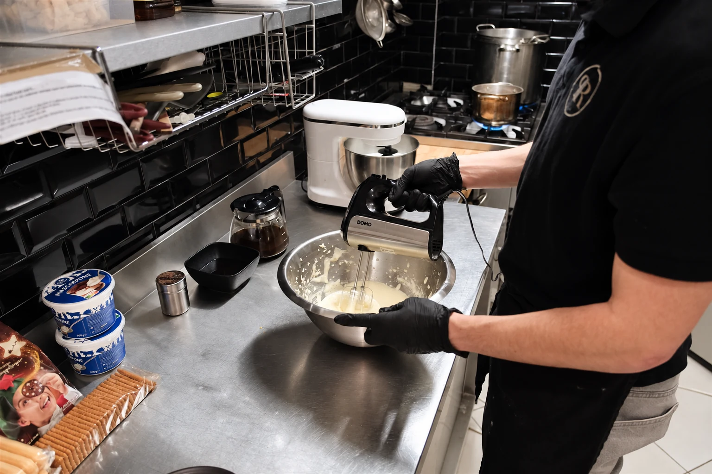
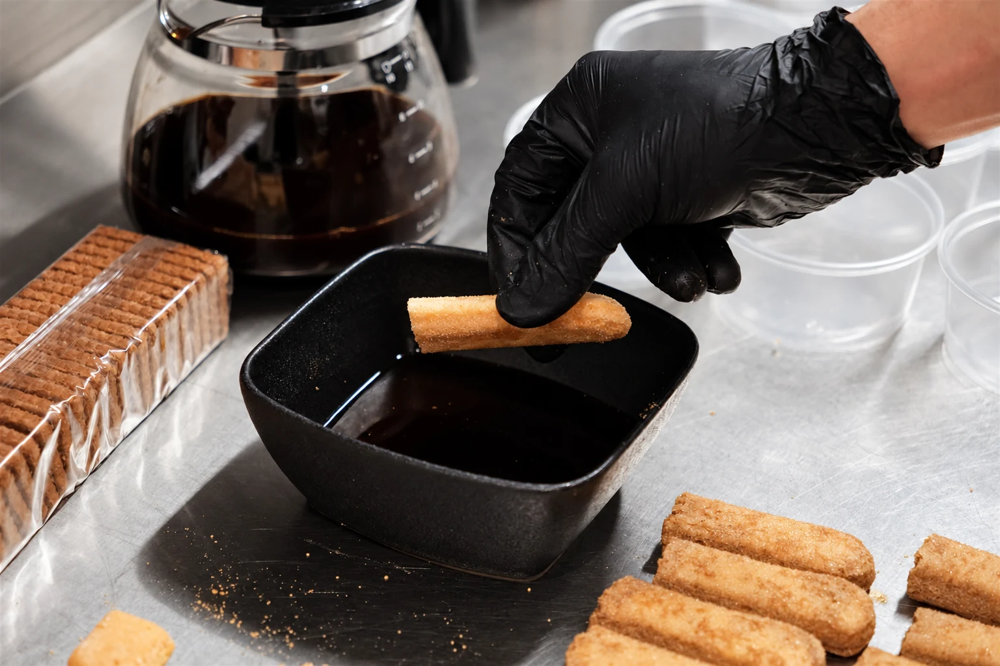
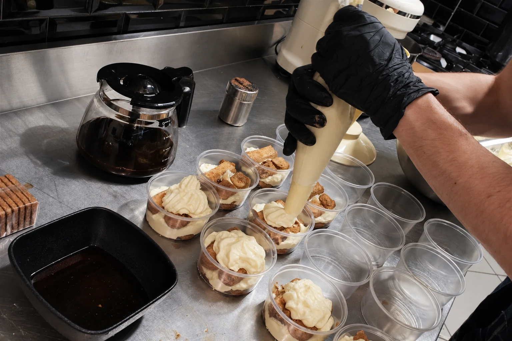

OUVRE.
Le couvercle se retire entièrement. Place à ta cuillère.
PHOTO À FOURNIR
La main retire l’opercule.
TIRAMISU ARTISANAL · PROVINCE DE LIÈGE
Préparé à la main. Servi en canette.

DU MASCARPONE. PAS DE CHANTILLY.
Dans Le Classique :
Légère, aérée, onctueuse.
Imbibés de café, fondants à la cuillère.
Présent, tout en douceur.
Le voile final.
La vraie canette en main, avec son étiquette.
C’était celui que je préparais avec ma Nona, depuis tout petit. Un goût que je cherchais souvent ailleurs, sans vraiment le retrouver.
Alors j’ai décidé de partager le nôtre.
Aujourd’hui, je prépare mes tiramisus à la main, en province de Liège. Et cette fois, ils ont une étiquette.
Timoty



La canette, mode d’emploi.
Le couvercle se retire entièrement. Place à ta cuillère.
La main retire l’opercule.
Va chercher la crème et les biscuits dans la même bouchée.
La cuillère traverse les couches.
Pour le partage, on te laisse gérer.
Une bouchée de crème, biscuit et cacao.
La canette ouverte et entamée.
Trois goûts. Une même crème au mascarpone.
Boudoirs imbibés de café, crème au mascarpone et voile de cacao. Celui avec lequel tout a commencé.
Du spéculos et notre crème au mascarpone. L’accent belge lui va bien.
Des biscuits Pane di Stelle au cacao et notre crème au mascarpone. Pour ceux qui ont un faible pour le chocolat.
La carte arrive…
Aucun point de vente affiché pour le moment.
Ouvrir dans OpenStreetMapDEVENIR REVENDEUR
Un tiramisu artisanal, préparé en province de Liège, dans une canette qui se remarque. Vous souhaitez le proposer à vos clients ? Parlons-en.
Devenir revendeurPOUR VOS ÉVÉNEMENTS
Un anniversaire, un événement d’entreprise ou une grande tablée ? Parlez-nous de la date, du lieu et du nombre de personnes. On prépare la suite ensemble.
Parlons de votre événement